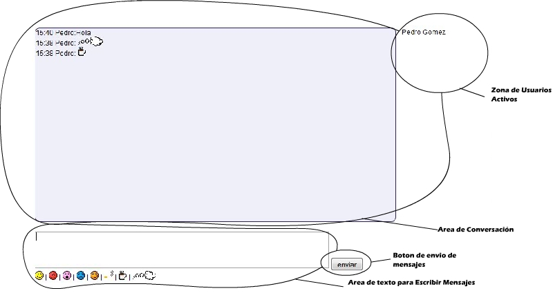

Charlas (Chat)El chat es muy sencillo de usar solo basta con enviar mensajes desde la area de abajo y contara con un dia de duración. Si el usuario se desconecta su mensaje seguira en el area de conversación en ese dia, la utilidad del chat es que logra mostrar a todos los usuarios conectados en ese momento en el groupware del lado izquierdo. Tambien cuenta con una pequeña selección de gifts para la personalización en la conversación.  |